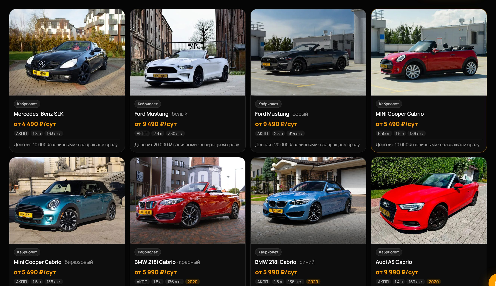
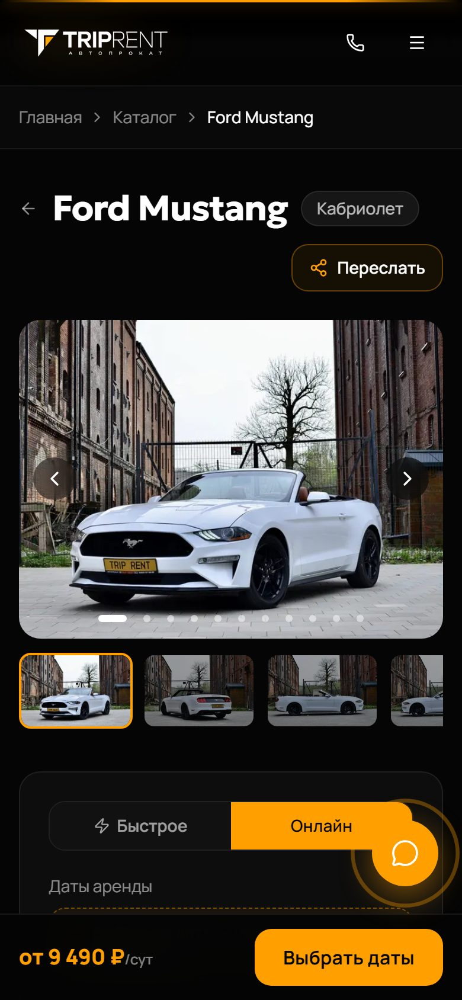

← Все кейсы
Кейс · Сайты и интеграции
Trip Rent: сайт, на котором клиенты сами бронируют и оплачивают машину
trip-rent.ru работает на живых данных CRM проката RentProg — это не витрина, а инструмент продаж.
- Клиент: прокат автомобилей в Калининградской области
- CRM клиента: RentProg
- Сайт: trip-rent.ru
Задача
Нужен был сайт, где клиент сам выбирает машину, бронирует и платит, — и чтобы цена и свободные даты не расходились с CRM.
Что сделали и как это работает
- Каталог из CRMНа сайте только машины, которые есть в RentProg.
- Цены как в CRMС учётом сезона и срока аренды.
- Свободные датыСайт показывает, когда машина доступна, — по данным CRM.
- Бронь и онлайн-оплатаКлиент бронирует и платит на сайте, оплата — через банк.
- Бронь уходит в CRMБронь и отметка об оплате записываются в RentProg.
- Неоплаченная бронь снимается самаПо таймеру и только после того, как банк подтвердил, что оплаты нет.
- Ежедневная сверкаКаталог и цены каждый день сверяются с живой CRM.
Что это дало бизнесу
- Клиент бронирует самВыбрать машину, забронировать и оплатить можно в любое время, даже когда офис закрыт.
- Цена берётся из CRMСайт берёт цену из CRM и каждый день сверяется с ней.
- Сайт встроен в работу прокатаБрони и оплаты попадают туда, где с ними работают менеджеры.
Как это выглядит


